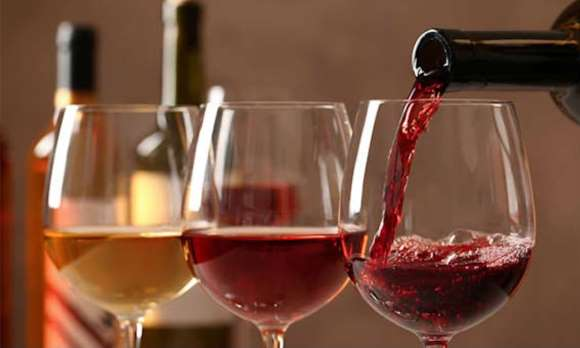
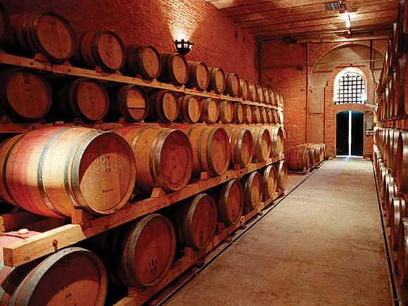
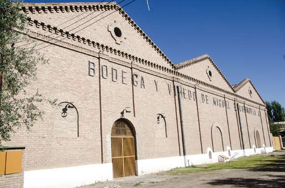
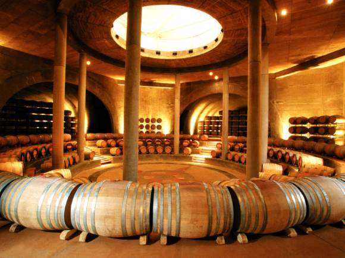

Degustación:

Bodega Bonfanti, Lujan de Cuyo-Mendoza
Es una bodega Boutique Familiar, ubicada en Lujan de Cuyo-Mendoza, donde se podrá visitar. El servicio de tours incluye la visita al viñedo, bodega y degustación.
Andeluna:

Valle de Uco
Esta maravillosa bodega está situada en un enclave mágico, Andeluna está sitiada por la majestuosa Cordillera de Los Andes
Escorihuela Gascón:

Belgrano 1188, Godoy Cruz, Mendoza
Fundada en 1884 con el compromiso de elaborar los vinos que representan a la Argentina en el mundo por su elegancia y calidad.
Trapiche:

Maipú
Pionera en la introducción de cepas francesas, vinos varietales, importación de barricas de roble y contratación de consultores internacionales. Forma parte de la extensa "Ruta del Vino en Mendoza"